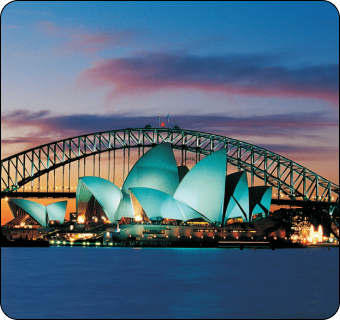

The Taj Mahal in Agra is one of the most iconic and famous landmarks in India, drawing millions of tourists from all over the world each year.
Here's some information about tourism around the Taj Mahal:
The Taj Mahal in Agra is one of the most iconic and famous landmarks in India, drawing millions of tourists from all over the world each year.
Here's some information about tourism around the Taj Mahal:
Taj Mahal: Built by the Mughal emperor Shah Jahan in memory of his beloved wife Mumtaz Mahal, the Taj Mahal is renowned for its stunning architecture, intricate marble work, and beautiful gardens. It's a UNESCO World Heritage Site and is considered one of the New Seven Wonders of the World.
Visiting the Taj Mahal: Tourists can visit the Taj Mahal throughout the year, but it's especially beautiful during sunrise and sunset. The best time to visit is during the cooler months between October and March to avoid the extreme heat of the Indian summer.
Paris, the City of Light, is one of the most iconic and beloved tourist destinations in the world.
From its historic landmarks to its charming streets, Paris offers something for every traveler.
Here's a glimpse into what makes Paris such a captivating place to visit:
Eiffel Tower: No trip to Paris is complete without a visit to the Eiffel Tower. Whether you admire it from afar or ascend to its dizzying heights for breathtaking views of the city, the Eiffel Tower is an iconic symbol of Paris.
Louvre Museum: Housing thousands of works of art, including the Mona Lisa and the Venus de Milo, the Louvre is one of the world's largest and most visited museums. Art lovers could spend days exploring its vast collections.

Sydney, Australia, is a vibrant and cosmopolitan city known for its stunning harbor, iconic landmarks, beautiful beaches, and diverse cultural scene.
Here are some highlights of tourism in Sydney:
Sydney Opera House: Perhaps the most recognizable symbol of Sydney, the Sydney Opera House is a UNESCO World Heritage site and a masterpiece of modern architecture.
Visitors can take guided tours of the interior, attend performances, or simply admire its unique design from the outside.
Sydney Harbour Bridge: Affectionately known as the "Coathanger,"
the Sydney Harbour Bridge offers visitors the opportunity to climb to the top for panoramic views of the city and harbor.
For those who prefer to stay grounded, walking or cycling across the bridge is also a popular activity.
The Maldives, an archipelago of over 1,000 coral islands in the Indian Ocean, is renowned for its stunning natural beauty, crystal-clear turquoise waters, and luxurious resorts.
Here's an overview of Maldives tourism:
Island Resorts: The Maldives is famous for its luxurious island resorts, many of which are situated on private islands. These resorts offer overwater villas, pristine beaches, and world-class amenities such as spas, fine dining restaurants, and water sports facilities.
Water Villas: Overwater villas are a signature feature of Maldives tourism. These luxurious accommodations stand on stilts above the lagoon, providing guests with direct access to the ocean, panoramic views, and the opportunity to spot marine life from the comfort of their villa.
Underwater Restaurants: The Maldives is home to some of the world's most spectacular underwater restaurants, where guests can dine while surrounded by colorful coral reefs and tropical fish. This unique dining experience offers a surreal underwater adventure.